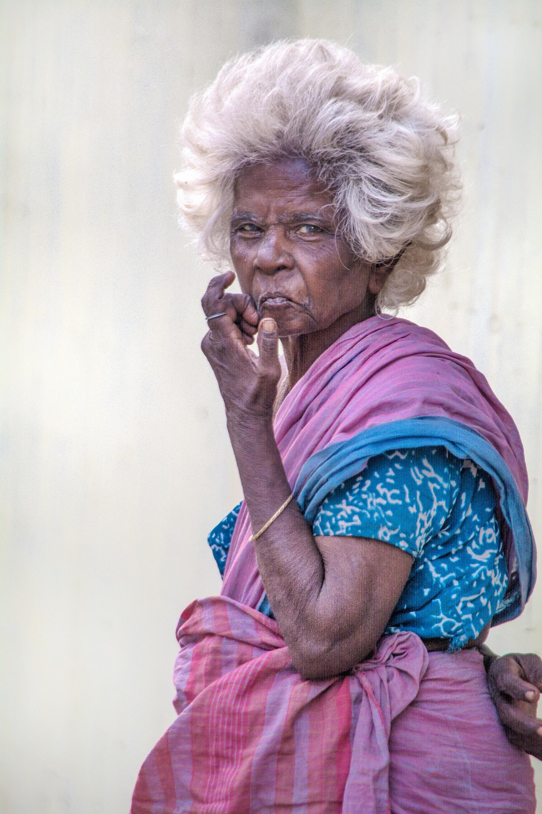
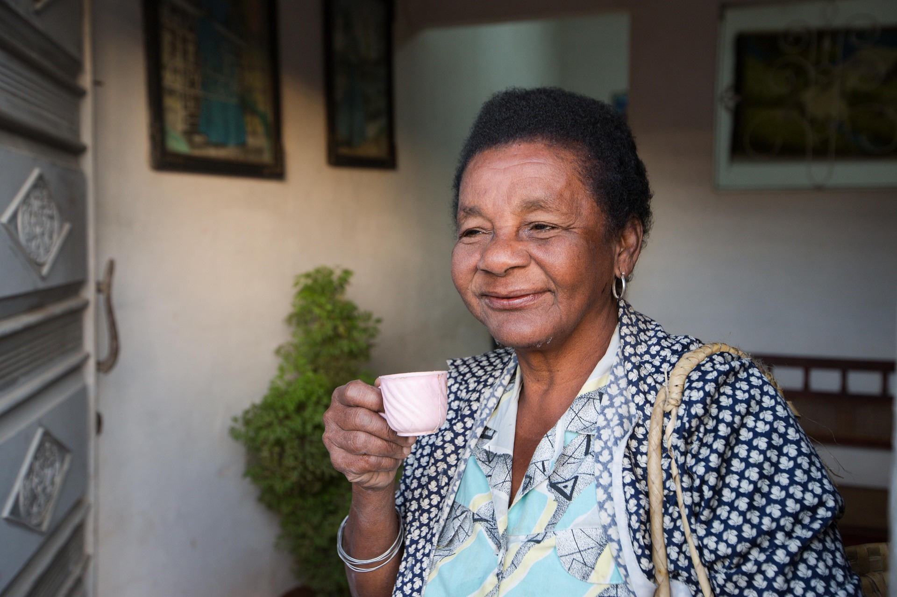
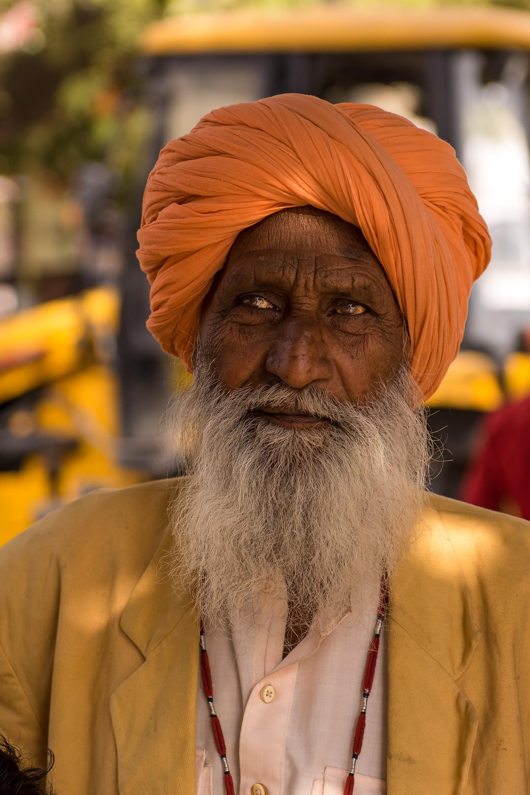
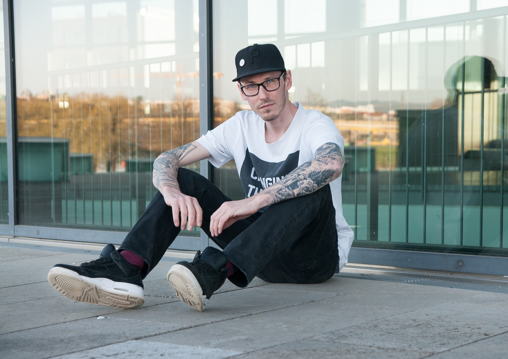

Naši lektoři

Mgr. Marie Nováková
Zaměření: Základy paličkování a tradiční techniky
Kontakt: marie@ukrajky.cz | +420 603 111 111
Marie má více než 15 let zkušeností s výukou paličkování. Specializuje se na začátečníky a tradiční krajkářské vzory.

PhDr. Jana Svobodová
Zaměření: Pokročilé techniky a šperky z krajky
Kontakt: jana@ukrajky.cz | +420 603 222 222
Jana je specialistka na jemnou krajku a výrobu šperků. Vede kurzy pro pokročilé studenty a designéry.

Ing. Petr Dvořák
Zaměření: Dětské paličkování a kreativní techniky
Kontakt: petr@ukrajky.cz | +420 603 333 333
Petr má bohaté zkušenosti s výukou dětí. Jeho lekce jsou hravé a přizpůsobené věku účastníků.
Mgr. Eva Krejčí
Zaměření: Vánoční ozdoby a sezónní dekorace
Kontakt: eva@ukrajky.cz | +420 603 444 444
Eva je expertka na vánoční a sváteční dekorace. Vede speciální kurzy zaměřené na dárky a ozdoby.

PhDr. Karel Novotný
Zaměření: Historie krajkářství a tradiční vzory
Kontakt: karel@ukrajky.cz | +420 603 555 555
Karel kombinuje výuku s historií. Jeho kurzy zahrnují nejen techniky, ale i kulturní kontext krajkářství.
Mgr. Lucie Procházková
Zaměření: Moderní aplikace a experimentální techniky
Kontakt: lucie@ukrajky.cz | +420 603 666 666
Lucie přináší moderní pohled na tradiční řemeslo. Vede workshopy zaměřené na současné trendy a inovace.
Naše učebna a zázemí
Učebna
Naše moderní učebna je vybavena ergonomickými pracovními stoly, dobrým osvětlením a klimatizací. Kapacita až 15 studentů zajišťuje individuální přístup ke každému účastníkovi.
Materiály
Poskytujeme všechny potřebné materiály včetně paliček, podvinků, nití a vzorníků. Pro pokročilé studenty máme k dispozici speciální nástroje a materiály.
Zázemí
V naší škole najdete příjemné prostředí s kuchyňkou pro přípravu čaje nebo kávy. K dispozici je také Wi-Fi připojení a prostor pro odpočinek mezi lekcemi.
Certifikace
Po absolvování kurzů obdržíte certifikát o dokončení. Naši lektoři jsou certifikovaní odborníci s dlouholetou praxí v oblasti tradičního řemesla.